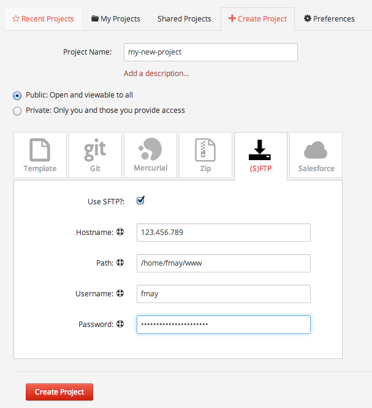
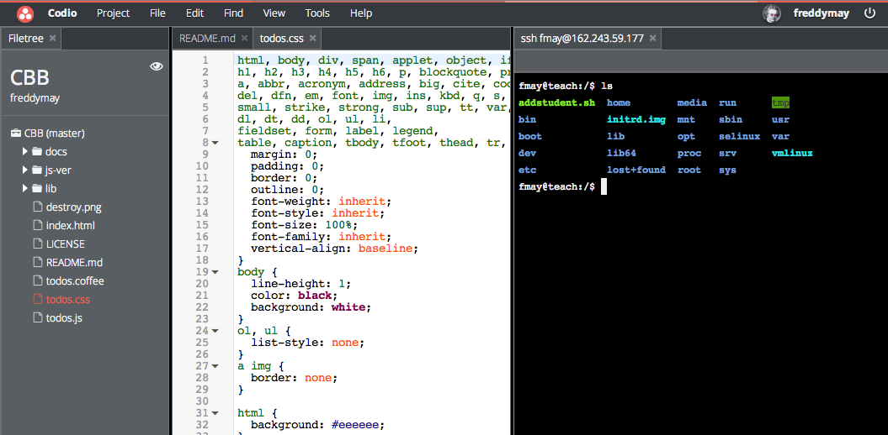
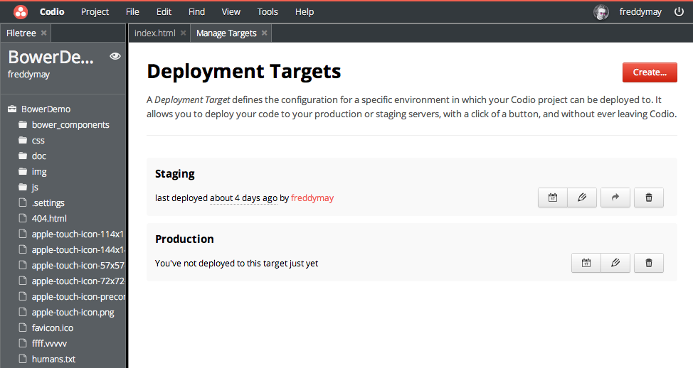

Quick Start
This section describes the steps you should take to get going with any back-end type development. So if you're into PHP, Node, Ruby, Python, Wordpress, Drupal, Joomla etc. this should help you get up and running quickly.
For a step-by-step tutorial of everything from spinning up a new remote server, to deploying your code, try the Start to Finish Tutorial.
Create a Project
You can, of course, start off with a blank project and code from scratch. However, if you already have a project then you have the following ways of loading it.
- ZIP file
- Git or Mercurial
- FTP or SFTP import
As described in the Create Project section, the import process will create a project for you and take you straight to your code.
The image below shows a typical import from an existing remote SFTP server.

Start Coding
This is largely self-explanatory and you will find the IDE very intuitive.
Terminal Access
If you need to access your remote server from your project, we recommend you set up an SSH Connection. You can then SSH directly into your server from Codio.
Be sure to read about our Panel Management features so you can configure the layout of your code and SSH windows exactly as you need them.

Deployment Targets
Your project can have any number of deployment targets. If you imported from FTP or SFTP, you will see that one was already created for you.
IMPORTANT : If your server supports it (and most, including Digital Ocean do), then we very strongly recommend choosing the RSYNC deployment type. This ensures that only modified files get deployed, so it is very fast indeed and comes close to the experience you have working on a local machine.
If your remote server does not support RSYNC, then you can deploy specific files and folders only using FTP or SFTP. This avoids your entire project getting deployed.

You can create any number of deployment targets for development, production and staging.
Previewing your application
You will want to preview your application as you code. The Preview & Deploy capability lets you make a code change and then press a single button to deploy your changes - again, RSYNC will only deploy changed files - and automatically preview them.